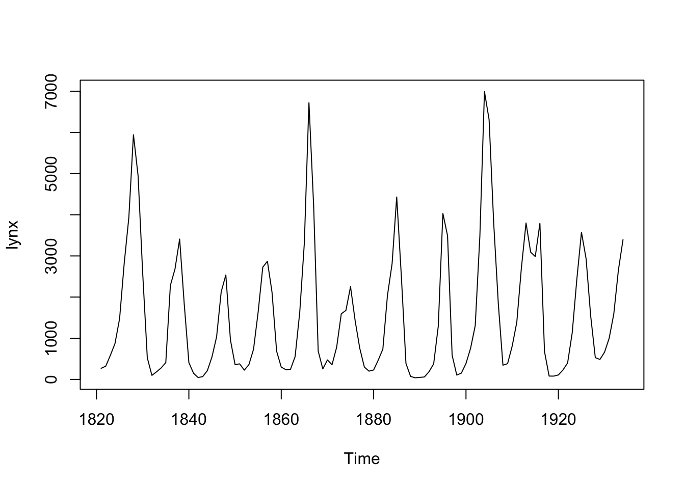
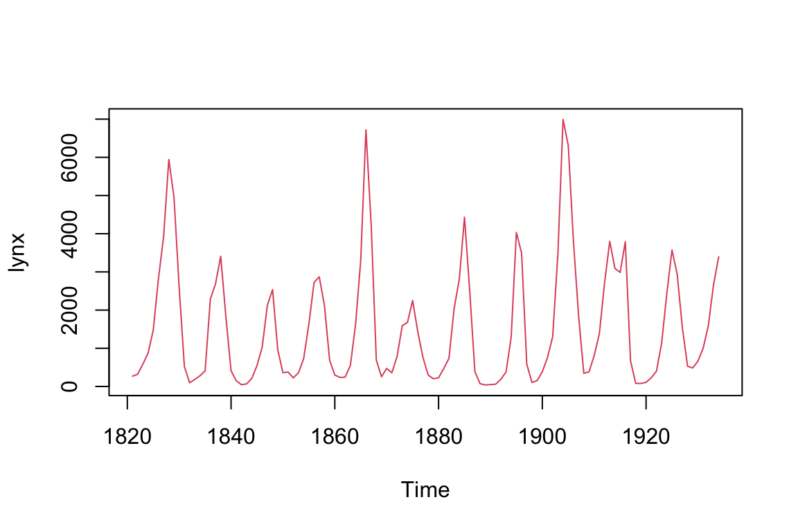
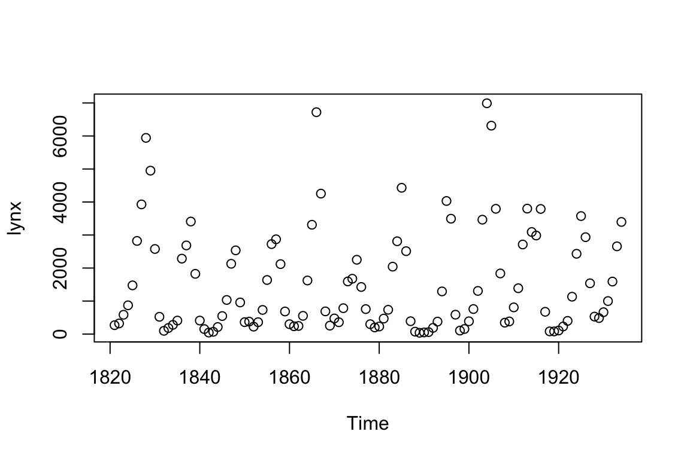
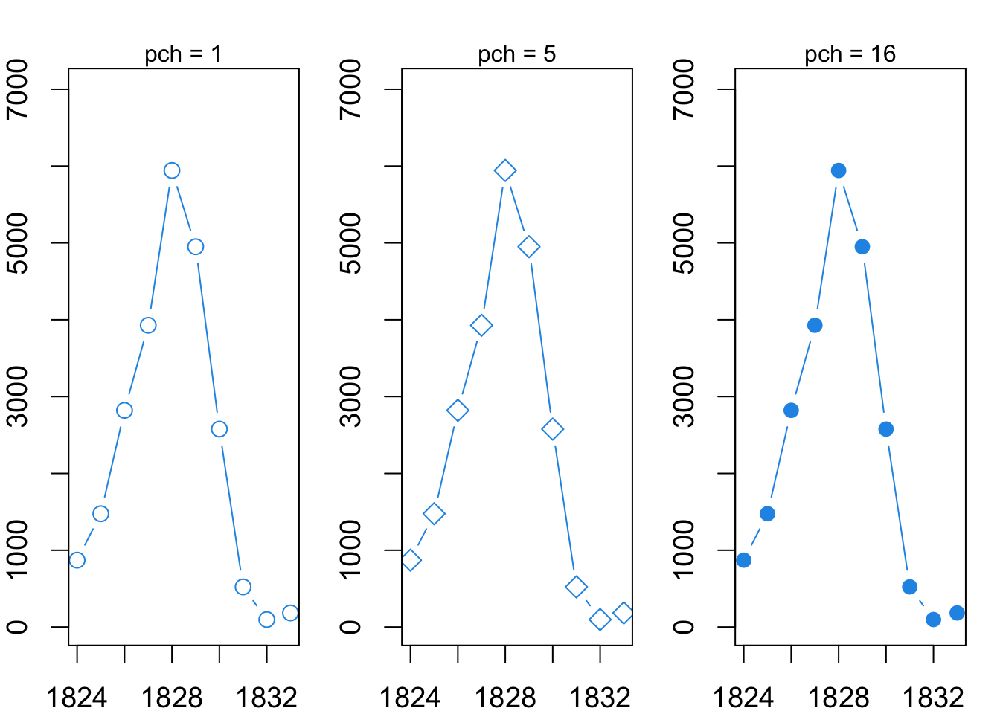
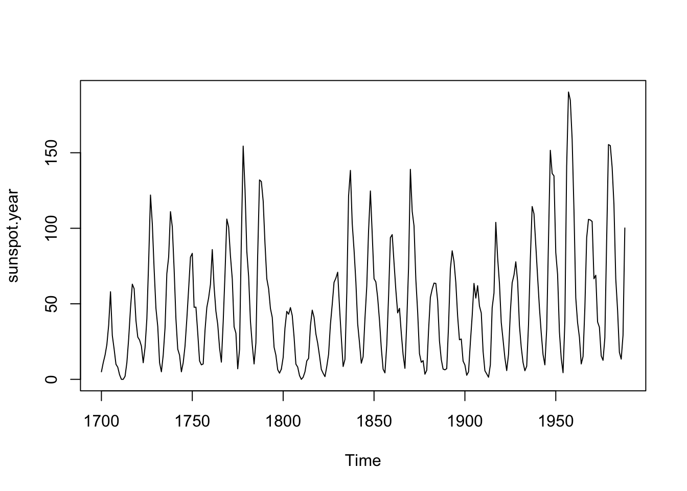

Chapter 6 Hello R! A first encounter with data visualization
6.1 Key Ideas
- Commands: R uses simple typed commands to do everything.
- Data: loading data that comes with R using the
data()command. - Plotting: Making simple plots with the
plot()command.
6.2 Data in R
We’ll start our exploration of R with a classic dataset from ecology and statistics showing one of the most striking patterns in wildlife biology: (population cycles)[https://en.wikipedia.org/wiki/Population_cycle]. Populations are always changing, whether it is declines in the number bacteria in our gut after we take an antibiotic or increases in raptor species after highly toxic pesticides were banned in the mid-twentieth century.

Figure 6.1: Growth of Eagle population in Pennsylvania, USA
In stark contrast, a few unique animals populations show dramatic oscillations, with rapid increases soon followed by dramatic drops, as if the population were on a roller coaster. One such population are Canada lynx (Lynx canadensis) in Canada.
Lynx are (unfortunately) prized for their soft fur. In years when there are many lynx, trappers kill many lynx; in years when there are few lynx, trappers kill few (however, the number of lynx killed by humans does not contribute to the cycle). Records from fur industry have been compiled by ecologists for over a century to investigate what drives changes in lynx numbers. The table below shows a snapshot of these data, starting from the earliest available records in 1821.
| year | lnyx.population |
|---|---|
| 1821 | 269 |
| 1822 | 321 |
| 1823 | 585 |
| 1824 | 871 |
| 1825 | 1475 |
| 1826 | 2821 |
| 1827 | 3928 |
| 1828 | 5943 |
| 1829 | 4950 |
| 1830 | 2577 |
| 1831 | 523 |
| 1832 | 98 |
| 1833 | 184 |
| 1834 | 279 |
| 1835 | 409 |
You’ve probably plotted data like this by hand using graph paper, point by point by locating the x-y coordinates. When plotting data like this, time (in this case “year”) goes on the horizontal x-axis, and the changing variable (lynx.population) goes on the vertical y-axis. In a spreadsheet, you could highlight these columns and click on the “Make graph” icons to make the initial plot, then adjust things by clicking on parts of the plot you want to change.
Spreadsheets are said to operate under the principle of “What You See Is What You Get”, or WYSIYGY. They use a fully mouse-drive Graphical User Interface (GUI) where everything is done by pointing and clicking. Every time you make a plot you do these steps.
R is very different - you only see things when you want to see them and you do everything via typed commands. This is a large paradigm shift for most people, so we’ll start very very slow.
6.3 Loading data that comes with R
The Canada lynx is not just famous with ecologists but also familiar to statisticians who have frequently used it to test statistical methods for studying time series - basically long-term datasets of the same thing. Because of this, these lynx data are embedded within R and easy to access: all you have to do is type data(lynx) into the console and press the “Enter” key.
data(lynx)You might be wondering “Ok, now what?” because nothing apparently happened. What you’ve done, though is loaded the lynx data into R’s active memory, where it will wait for you next command.
Loading your own data into programs such as R can be a pain, so I’ll use techniques such as use the data() command to make things as smooth as possible. I’ll also introduce other methods, such as loading small datasets using code and downloading them from the internet. I’ll also provide a thorough overview in the Appendices.
6.4 Plotting simple datasets with plot()
Now in the console type plot(lynx) and press enter. You should see readout like what you see below …
plot(lynx)
… and this intriguing plot. The x-axis is time from the early 1800s to the early 1900s, and the y-axis is the number of lynx pelts. This pattern continues to today, and it causes have kept ecologists working hard for over 100 years. Moreover, statistical analyses of data such as these have similarly kept statisticians busy.
This is a simplified example, but that’s the basics of working in R:
- Load data
- Use commands like
plottell R to do something with.
For most of this book we’ll use data that’s been mostly pre-packaged for you to work with and loaded using the data() command. Real data analyses require more steps, and later in the book we’ll briefly cover them so you are familiar with them when you see them elsewhere; further details can also be found in the Appendix.
6.5 Commands in R
The words “data” and “plot” in R represent commands; R associates specific code and therefore actions with these words To indicate commands in the text I’ll always write it like this: data(). The parentheses are very important in R; forget one of them, and things won’t work. After the word representing the command there is always a parenthesis (. Other things such as the name of a dataset go after the first parenthesis, and the command is completed with a matching parenthesis ). To emphasis that things using go within the parentheses I will often write commands like this data(...), where the ... in this case is the name of a dataset.
In some cases you can issue a command, like data(), and R does something only behind the scenes. Often, though, we’ll elicit a reaction from R, either data will appear in the Console or a plot will be created.
6.6 The structure of commands in R
Our use of the plot() command was pretty standard; there were two pieces to it:
- The command,
plot() - The data,
lynx
Data in R – and especially in computational biology – can take on many forms, which we’ll cover as needed as throughout the book. All data is presented in R by an object stored behind the scenes in R’s memory. The fact that data in R is usually resting out of view until we do something explicitly with it can take some getting used to, since usually we work with data printed out on a page or displayed in a spreadsheet.
Commands in R almost always include an object within them. Next we’ll consider something else that go with commands : arguments.
6.7 Arguements in R
A common mathematical operation when doing data analysis is taking the log of something. (For now we won’t worry about what the log is or why we use it’ we’ll come back to this little bit of math frequently though). We can tell R to plot the log of our lynx data by adding the argument log = "y" to the plot(...) command. This alters the graph a bit which, for some particular data analysis purposes, will come in handy (more on that later).
plot(lynx, log = "y")
In the code above log is the argument and "y" is the value assigned to the argument.
Arguments always have an equals sign with them, so I’ll emphasize this by typically writing them as argument.name = .... One tricky thing about arguments is that they can take on letters, words, or numbers, and sometimes there need to be quotation marks like log = "y", but not always.
Since arguments are fairly tricky, they are a common source of errors, such as forgetting =, or putting the value of the argument in the wrong format.
6.8 Arguements and more arguments
We now have three things going on
- A command,
plot() - A data object,
lynx - An argument,
log = "y"
Most functions in R have multiple arguments that can be invoked Try the following code plot(lynx, col = 3). That is the plot() function with the argument col = 3 added. What do you think col = 2 means? Try different values like 4, 5, and 6.
plot(lynx, col = 2)
Now try this: plot(lynx, type = "p")
Note that there are quotation marks around the p.
plot(lynx, type = "p")
Now instead of “p” use “b”, which stands for “both”. What do you think the “both” is referring to?
plot(lynx, type = "b")
## TODO: add followup exercises
### R, biology
## TODO Add as optional? cover elsewhere
plot(log(lynx))6.9 Multiple arguments at the same time
Functions can not only have multiple arguments, but they can take on multiple arguments at the same time. Let’s feed two arguments to plot(), col = ... and a new one, type = ....
plot(lynx, col = 4, type = "b")
Examine the series of plots below; what do you think type=... is referring to?

6.10 R commands and line breaks
A cool thing about R is that it doesn’t care about line breaks within a command, so I can do this if I want:
plot(lynx,
col = 4,
type = "b")Or if for some reason this
plot(lynx, col = 4,
type = "b")Or even this
plot(lynx,
col = 4,
type = "b")6.11 Code comments
One thing that putting thing on multiple lines allows you do to is add comments to your code if you place a hashtag (aka pound symbol) in front of it.
plot(lynx, # data object
col = 4, # color argument
type = "b") # type of graph argument
6.12 A note on plotting
One of the great things about R is that it can make really nice plots. You’ll soon see that there are many ways to do the same basic thing in R, and this includes making plot. Data visualization is a key aspect of modern science, so its important to build up your skills, including knowing about the different ways plots are made in R. Don’t worry though - we’ll build all of this up step by step.
6.13 Now you try it
6.13.1 Easy tasks
Fix each line of code below so the work
plot lynx
plot(lynxExamine the plots below. What does pch = ... do to the plot?

Examine the plots below. What does lwd = ... do to the plot?

Fix each argument below so the code works.
plot(lynx, col 1)
plot(lynx, col = "1")
plot(lynx, type b)
plot(lynx, type = b)
plot(lynx, type "b")
plot(lynx type "b")
plot(lynx, type = "b)plot(lynx, col 1, type = "b)
plot(lynx, col = "1", type = b)
plot(lynx, pch = 1, type b)
plot(lynx, pch 1 type = b)
plot(lynx, lwd = "2" type "b")
plot(lynx pch = 2, type "b")
plot(lynx, lwd = 3 type = "b)Split the following code between multiple lines and add a comment between each of them to indicate what the argument does.
plot(lynx, type = "b", pch = 2,)6.13.2 Intermediate tasks
Here’s a challenge: there is another dataset that comes with R called sunspot.year There was once a hypothesized link between the Canada lynx and sunspots that we’ll explore later; right now we’ll just check it out. See if you can do the following things on your own in the R console.
Make a simple plot
- Using the
data()command, loadsunspot.yeardata into R’s active memory - Plot the data.
Your plot should look like this:

Modify your plot
- Use the
col =argument to make the color of the line different than black. - Use the
type =argument to make the plot show points connected by a line.
Your plot should look like this:

Plot on the log scale
Plot the sunspot data on the log scale. Note: you will get a warnig in red text - you can ignore this.
## Warning in xy.coords(x, NULL, log = log, setLab = FALSE): 3 y values <= 0
## omitted from logarithmic plot